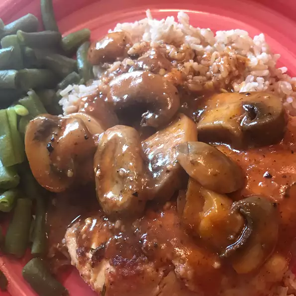

Chicken in a pot

Chicken in a pot, easy and quick meal prep!
With only one skillet and 30 minutes, you can make this delicious meal.
Ingredients
- ¾ cup chicken broth
- 1 ½ tablespoons tomato paste
- ¼ teaspoon ground black pepper
- ½ teaspoon dried oregano
- ⅛ teaspoon salt
- 1 clove garlic, minced
- 4 boneless, skinless chicken breast halves
- 3 tablespoons dry bread crumbs
- 2 teaspoons olive oil
- 2 cups fresh sliced mushrooms
Steps:
- In a medium bowl, combine the broth, tomato paste, ground black pepper, oregano, salt and garlic. Mix well and set aside.
- Dredge the chicken in the bread crumbs, coating well. Heat the oil in a large skillet over medium high heat. Saute the chicken in the oil for 2 minutes per side, or until lightly browned.
- Add the reserved broth mixture and the mushrooms to the skillet and bring to a boil. Then cover, reduce heat to low and simmer for 20 minutes. Remove chicken and set aside, covering to keep it warm.
- Bring broth mixture to a boil and cook for 4 minutes, or until reduced to desired thickness. Spoon sauce over the chicken and serve..
Credits: Allrecipes.com - Chicken in a pot
Back to index